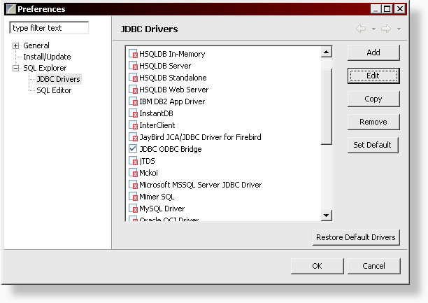
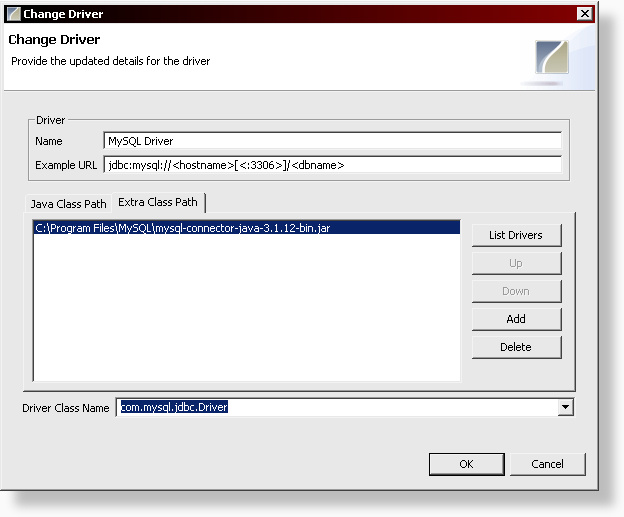

In the driver preferences, you can see which drivers are
currently available.
A lot of templates are already available, but only the JDBC-ODBC bridge
is ready for use immediately. For the other drivers, you'll need to add
the driver jar files first.

Let's make the MySQL driver available. First, hightlight the
MySQL entry and then select 'Edit'.
You'll notice that on the second tab, there is no classpath for the
driver.
Click on the 'Add' button and select your mysql driver jar. After adding the jar, click on the 'List Drivers' button. This will list all available driver classes in the Driver Class Name dropdown. Next, select the driver class you want to use and hit OK.

As we can see in the preference page, we've now enabled the MySQL driver.
You can use the 'Set Default' button to make the MySQL the default driver for new connections.